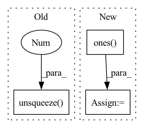

Pattern ID :3319

Before Change
seq_length = input_ids.shape[1]
if position_ids is None:
position_ids = paddle.arange(start_idx_pos_encodings, start_idx_pos_encodings + seq_length)
position_ids = position_ids.unsqueeze(0).expand_as(input_ids)
inputs_embeds = self.word_embeddings(input_ids)
After Change
input_shape = paddle.shape(inputs_embeds)[:-1]
if position_ids is None:
ones = paddle.ones(input_shape, dtype="int64")
seq_length = paddle.cumsum(ones, axis=1)
position_ids = start_idx_pos_encodings + seq_length - start_idx_pos_encodings - ones
position_ids.stop_gradient = True
In pattern: SUPERPATTERN
Frequency: 4
Non-data size: 3
Instances
Fragment ID: 12754947
Project Name: paddlepaddle/paddlenlp
Commit Name: 7c75f5983d9a09617f1492345c65cfe1087338b5
Time: 2023-03-13
Author: 115528288+tsinghua-zhang@users.noreply.github.com
File Name: paddlenlp/transformers/reformer/modeling.py
M Class Name: ReformerEmbeddings
N Class Name: ReformerEmbeddings
M Method Name: forward(5)
N Method Name: forward(4)
M Parent Class: nn.Layer
N Parent Class: nn.Layer
M File Name: paddlenlp/transformers/reformer/modeling.py
N File Name: paddlenlp/transformers/reformer/modeling.py
M Start Line: 458
M End Line: 477
N Start Line: 460
N End Line: 488
'>
Before Change
his_vectors = his_vectors + pos_vectors
// Self-attention
attn_mask = 1 - valid_his.unsqueeze(1).repeat(1, seq_len, 1)
for i in range(self.num_layers):
residual = his_vectors
// self-attention
After Change
his_vectors = his_vectors + pos_vectors
// Self-attention
causality_mask = np.tril(np.ones((1, 1, seq_len, seq_len), dtype=np.int))
attn_mask = torch.from_numpy(causality_mask).to(self.device)
// attn_mask = valid_his.view(batch_size, 1, 1, seq_len)
for block in self.transformer_block:
his_vectors = block(his_vectors, attn_mask)
his_vectors = his_vectors * valid_his[:, :, None].float()
his_vector = (his_vectors * (position == 1).float()[:, :, None]).sum(1)
'>
Fragment ID: 12754944
Project Name: thuwangcy/rechorus
Commit Name: dba1d0bd7b6d7296ed6c730793e0f61278007dc2
Time: 2020-11-08
Author: THUwangcy@gmail.com
File Name: src/models/sequential/SASRec.py
M Class Name: SASRec
N Class Name: SASRec
M Method Name: forward(2)
N Method Name: forward(2)
M Parent Class: GRU4Rec
N Parent Class: GRU4Rec
M File Name: src/models/sequential/SASRec.py
N File Name: src/models/sequential/SASRec.py
M Start Line: 41
M End Line: 72
N Start Line: 41
N End Line: 66
'>
Before Change
mask = np.expand_dims(mask, axis=0)
if mask.shape[-2] == 1: // 1D mask
mask = torch.from_numpy(mask.astype(np.float32)).unsqueeze(0).unsqueeze(-1)
// shape = np.array(kspace.shape)
// num_cols = shape[-2]
// shape[:-3] = 1
// mask_shape = [1] * len(shape)
After Change
[masked_kspace.shape[-3], masked_kspace.shape[-2]], dtype=torch.float32 // type: ignore
)
else:
mask = torch.ones(
[masked_kspace.shape[-3], masked_kspace.shape[-2]], dtype=torch.float32 // type: ignore
)
if mask.ndim == 1:
mask = np.expand_dims(mask, axis=0)
'>
Fragment ID: 12754951
Project Name: wdika/mridc
Commit Name: c2a867923121b2e496c03be5818eae6c76dfe881
Time: 2022-03-26
Author: 62050782+deepsource-autofix[bot]@users.noreply.github.com
File Name: mridc/collections/reconstruction/parts/transforms.py
M Class Name: MRIDataTransforms
N Class Name: MRIDataTransforms
M Method Name: __call__(9)
N Method Name: __call__(9)
M Parent Class:
N Parent Class:
M File Name: mridc/collections/reconstruction/parts/transforms.py
N File Name: mridc/collections/reconstruction/parts/transforms.py
M Start Line: 167
M End Line: 252
N Start Line: 233
N End Line: 253
'>
Before Change
def make_mask(self, input_tensor):
mask = (input_tensor != self.config["pad_id"]).float() // (B, L)
mask = mask.view(input_tensor.shape[0], -1)
mask = mask.unsqueeze(1).unsqueeze(2) // (B, 1, 1, L)
mask = mask.to(dtype=next(self.decoder.parameters()).dtype)
return (1.0 - mask) * self.config["inf"] // (B, 1, 1, L)
After Change
e_mask = (src_input != self.config["pad_id"]).unsqueeze(1) // (B, 1, L)
d_mask = (trg_input != self.config["pad_id"]).unsqueeze(1) // (B, 1, L)
nopeak_mask = torch.ones([1, self.config["max_len"], self.config["max_len"]], dtype=torch.bool) // (1, L, L)
nopeak_mask = torch.tril(nopeak_mask) // (1, L, L) to triangular shape
d_mask = d_mask & nopeak_mask // (B, L, L) padding false
return e_mask, d_mask
'>
Fragment ID: 12754953
Project Name: devjwsong/recosa-dialogue-generation-pytorch
Commit Name: 80bce80842f7d7d8da42b8b0a6d36a1fa2432768
Time: 2020-08-25
Author: enflwodn@gmail.com
File Name: src/dialogue_model.py
M Class Name: DialogueModel
N Class Name: DialogueModel
M Method Name: make_mask(3)
N Method Name: make_mask(2)
M Parent Class: nn.Module
N Parent Class: nn.Module
M File Name: src/dialogue_model.py
N File Name: src/dialogue_model.py
M Start Line: 102
M End Line: 107
N Start Line: 75
N End Line: 83